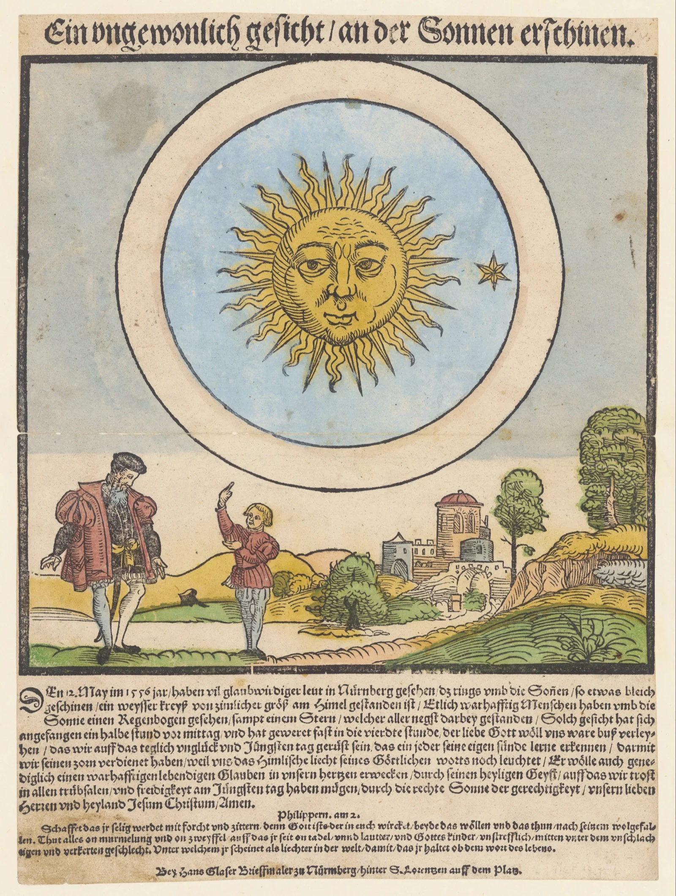

Phenomena
The Sky Over Nuremberg, 1561
Orbs, crosses, and a great black arrow. When the citizens looked up one April morning, they saw a battle raging overhead. Nobody could explain it.
Orbs, crosses, and a great black arrow. When the citizens looked up one April morning, they saw a battle raging overhead. Nobody could explain it.

A Roman duke spent thirty years diagramming every circle, terrace, and sphere of Dante's afterlife. The result looks like a geological survey of damnation.

The first president of Boston University was convinced he'd found Eden (at the North Pole). Then he turned his attention to Hell.

John Martin gave Satan the grandeur of a Romantic hero and gave Hell the architecture of an industrial sewer. His Pandemonium looks almost like a train station.

In 1554, Strasbourg's citizens watched cavalry fight in the clouds for hours. Then the soldiers trotted off and vanished.

Before the telescope, a young Galileo derived Lucifer's exact height from Dante's verse and the geometry of Brunelleschi's dome.